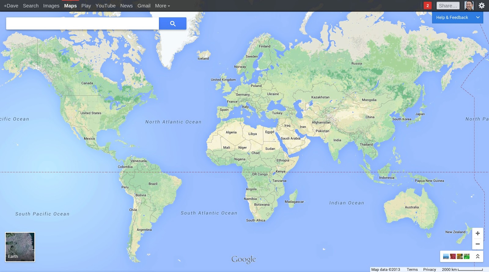

AGIC 2014
Online GIS Mapping without GIS Servers
Who dis?

James Fee
Business Development
Web Developer
Golfer
PHXGeo Founder
Who dat over there?

Sheldon McGee
Web Developer
Build in the physical world with wood
Arduino and Pi are cool
AFOL
GDG Organizer
Why No GIS Servers?
They are slow
They are expensive to license
They require you to use .NET, Java, C++
They are middleware
Not the future
Tiling
TileMill + MBTiles
GeoServer and GeoWebCache
Esri ArcGIS
Mapnik (for those who roll their own)
Google/OSM/etc
But James...

Tiling only works for data that doesn't change.
That's what databases are for!
So let's use a spatial db to serve up the data!
GeoJSON
GeoJSON is a format for encoding a variety of geographic data structures.
{
"type": "Feature",
"geometry": {
"type": "Point",
"coordinates": [-112.46, 34.54]
},
"properties": {
"name": "Prescott, Arizona"
}
}
Here's the plan
The tech
- Google Compute Engine
- PostGIS
- Some JS mapping library
Google Compute Engine
- Node.js
- Spatial databases
- Anything else?
PostGIS
Google Maps
Using GeoJSON with Google Maps:
Google Maps Javascript API v3 Data Layer
map.data.loadGeoJson('http://localhost/prescott.json');
The Demo
GIS in Google Maps
END
Questions?
Or if you are shy catch us on twitter: